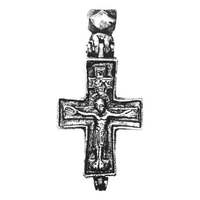
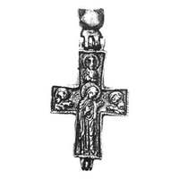

Catalog › CE-0951 · KOR2003-II.4.3.3
Encolpion întreg cu inel multifațetat: Răstignire pe față, Agiosoritissa cu inscripții turnate pe revers
sec. înainte de IX–X (așa în tipar) (801–1000) · Pekari (Kniaja Gora), raionul Kaniv, regiunea Cerkasî, Ucraina · Muzeul Național de Istorie al Ucrainei, Kiev, inv. В-906
double-sided reliquary cross (enkolpion), aramă; c. înainte de IX–X (așa în tipar) (801–1000); found at Pekari (Kniaja Gora), raionul Kaniv, regiunea Cerkasî, Ucraina; kept at Muzeul Național de Istorie al Ucrainei, Kiev.




Identificare
- Categorie
- Encolpion bivalv (relicvar)
- Material
- Aramă
- Tehnică
- Turnare în relief
- Stare
- Întreagă
- Dimensiuni
- Î 66 × L 47 × Gr 12 mm
Iconografie
- Avers
- Neidentificat
- Descriere avers
- Encolpion relief cu capete drepte, abia lărgite; ramura de jos mai lungă decât cea de sus. În exterior, pe față, imaginea în relief a Răstignirii, cu poziție dreaptă a corpului lui Hristos, deasupra capului căruia se află o cruce cu patru capete cu inscripție. Suprafața interioară netedă, cu adâncituri în ramura verticală, care repetă imaginile exterioare. În exterior, de-a lungul conturului ambelor valve, o ramă îngustă pseudo-filigran (asemănătoare unei borduri).
- Revers
- Maica Domnului Orantă; Neidentificat
- Descriere revers
- În exterior, pe revers, imaginea Maicii Domnului cu mâinile ridicate, întoarsă spre stânga (Agiosoritissa), cu inscripții în stânga și în dreapta în încrucișare. Pe capetele laterale ale crucii, imagini ale sfinților până la piept, întoarse spre Maica Domnului; pe capătul de sus, imagine frontală până la piept a unui sfânt.
- Inscripții
- IC XC (față); НР, Ꙋ (revers, stânga și dreapta capului Maicii Domnului); Р (ramura de sus)
- Limba
- Slavonă
Datare și atribuire
- Datare
- sec. înainte de IX–X (așa în tipar) (801–1000)
- Centru
- Necunoscut
- Tipologie
- Korzukhina–Peskova 2003, tip II 4 3
Descoperire
- Localitate
- Pekari (Kniaja Gora)
- Regiune
- raionul Kaniv, regiunea Cerkasî
- Țară
- Ucraina
- Context
- Fortificație
Păstrare și referințe
- Colecție
- Muzeul Național de Istorie al Ucrainei, Kiev
- Nr. inventar
- В-906
- Bibliografie
- G. F. Korzukhina, A. A. Peskova, Древнерусские энколпионы. Нагрудные кресты-реликварии XI–XIII вв., Sankt-Petersburg, 2003 [Korzukhina–Peskova 2003], p. 99, cat. nr. II 4 3/3, reprodusă la Табл. 46 (planșe, p. 288). Bibliografie citată în sursă: Пуцко 1988, 209–225, рис. 1; Коваленко, Пуцко 1993, 303; Корзухина, архив ф. 77, д. 15, л. 126.
- Figura
- Табл. 46
- Planșe
- Korzukhina–Peskova 2003, Табл. 46 (planșă fără paginație proprie în PDF; p. 288 tipărită)
- Observații
- Datare după Peskova: sec. înainte de IX–X (așa în tipar). Circumstanțe: Săpături N. F. Beleașevski, anii 1890, pe cetate (gorodișce). Proveniență în colecție: din colecția B. I. și V. N. Hanenko. Inscripții adâncite, turnate odată cu crucea. Datarea apare în tipar „До IX—X вв” (posibil greșeală de tipar, ceilalți encolpioni ai grupului fiind din sec. XIII); de verificat. Gravarea nu e menționată în sursă pentru această piesă. Coordonate: nu sunt date în sursă.
Citare: Corpus Encolpiorum, CE-0951, Encolpion întreg cu inel multifațetat: Răstignire pe față, Agiosoritissa cu inscripții turnate pe revers, --root/piese/KOR2003-II.4.3.3/ (accesat 2026-10-20).